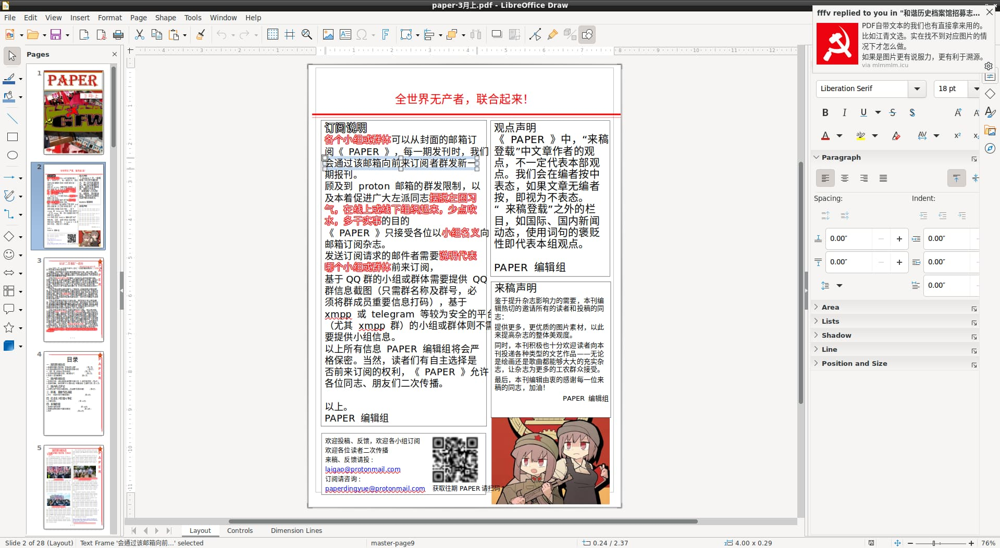

前端沒有顯示的話還是算了。
如果是百毒那種段落識別，完全沒有類型標籤。
段落識別總是有代碼的，JS能做到的代碼，其他代碼也同樣能做到。
為了長遠利益著想，AI數據集化資料庫是必要的。
段落的类型靠自动化OCR+一些简单的算法去识别，另外也依赖人工校对
段落是根據\n劃分還是全角空格劃分？資料庫並沒有多少全角空格。此外就是，引用語錄根本是在段落內部，不能成為段落本身的整體性質。
段落内部也可以开发，现在还不支持，我只是举个txt难以做到例子
txt難以做到，html就很容易做到嗎？最後窮舉的篩選器會堆積成屎山。
根据OCR的结果，初步分段，比如前一行比后一行的包围盒x坐标小30个像素以上，后一行很可能是新的段落
我没有拿txt和html比较，而是和数据库比较
資料庫的主要數據來源是PDF，為什麼不從文字PDF本身的性質（如文本座標、文本框大小）比如LibreOffice Draw出發，而要根據OCR文本字符角落點的數據出發呢？這是有損的。
PDF自带文本的我们也有直接拿来用的。比如江青文选。实在找不到对应图片的情况下才怎么做。
如果是图片更有说服力，更有利于溯源。

引用語錄識別，有自覺的和不自覺的，自覺的或許編者會加上註釋，不自覺的怎麼辦？不還是要靠Python find、repr(list)、‘a。bbb。’.split(‘。’)、Jieba.cut()尋找嗎？
一般要从排版特征，文本特征多方面去考虑。如果没有明显规律，就要手动打标签。
靠纯文本做不到的
再編輯一份txt就解決了。
按照你們的情況，等個幾年都不會有你許諾的功能出現。
导出TXT以后 还要给每个段落标出类型吗？markdown不足以描述所有段落类型。
是完全根據前端網頁導出一個txt，經過文本處理，這個txt完全用於存儲引用了語錄的段落。（在末尾加來源標記）
那更复杂了，直接操作数据库不行吗?
不全面。